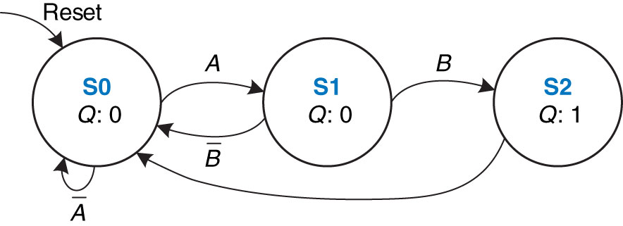
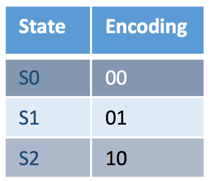
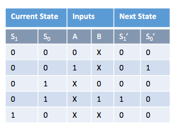
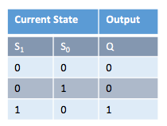
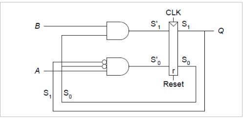
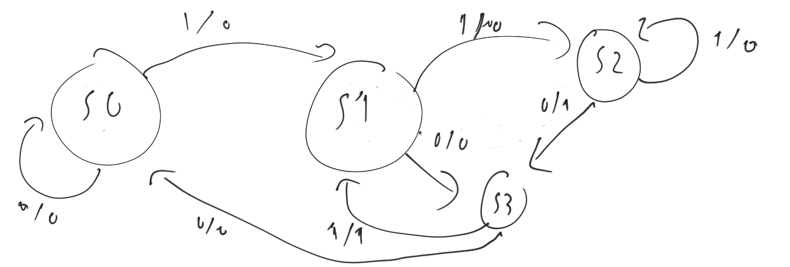
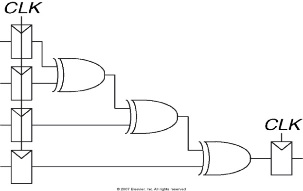

Tutorial 8
Created Monday 14 March 2016
1) Describe in words what the state machine in the figure does. Using binary state encodings, complete a state transition table and output table for the FSM. Write Boolean equations for the next state and output and sketch a schematic of the FSM.

Answer:
The State starts at S0 with Q=0 when A happens it goes to S1 when B happens from S1 it goes to S2 With Q=1 and then goes back to S0. if at any point A' or B' happens it goes to S0




2) The snail from the example discussed in lectures has a son with a Mealy machine brain. The son snail smiles whenever he slides over the pattern 110 or 101 on the paper tape.
i) Sketch the state transition diagram for this happy snail using as few states as possible.
Answer:

ii) Choose state encodings and write a combined state transition and output table using your encodings.
Answer:
S0 S1 I O NS0 NS1
0 0 0 0 0 0
0 0 1 0 0 1
0 1 1 0 1 0
0 1 0 0 1 1
1 0 0 1 1 1
1 0 1 1 1 0
1 1 1 1 0 1
1 1 0 0 0 0
iii) Write the next state and output equations and sketch your FSM schematic.
Answer:
??
3) A student has designed the circuit in the following figure to compute a registered four-input XOR function. Each two-input XOR gate has a propagation delay of 80ps and a contamination delay of 45ps. Each flip-flop has a setup time of 50ps, a hold time of 15ps, a clock-to-Q maximum delay of 65ps, and a clock-to-Q minimum delay of 35ps.

What is the maximum operating frequency of the circuit?
Answer:
Timing Characteristics:
tccq = 35 ps
tpcq = 65 ps
tsetup = 50 ps
thold = 15 ps
tpd = 80 ps
tcd = 45 ps
tccq = 35 ps
tpcq = 65 ps
tsetup = 50 ps
thold = 15 ps
tpd = 80 ps
tcd = 45 ps
tpd = 3 x 80 ps = 240 ps
tcd = 1 x 45 ps = 45 ps
tcd = 1 x 45 ps = 45 ps
Setup time constraint:
Tc ≥ tpcq + tpd + tsetup
Tc ≥ (65 + 240+ 50) ps = 355 ps
fc = 1/Tc = 2.82 GHz
Tc ≥ tpcq + tpd + tsetup
Tc ≥ (65 + 240+ 50) ps = 355 ps
fc = 1/Tc = 2.82 GHz